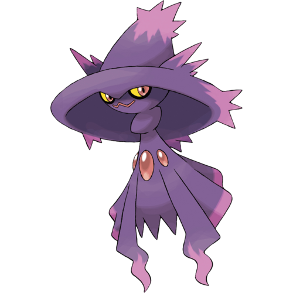
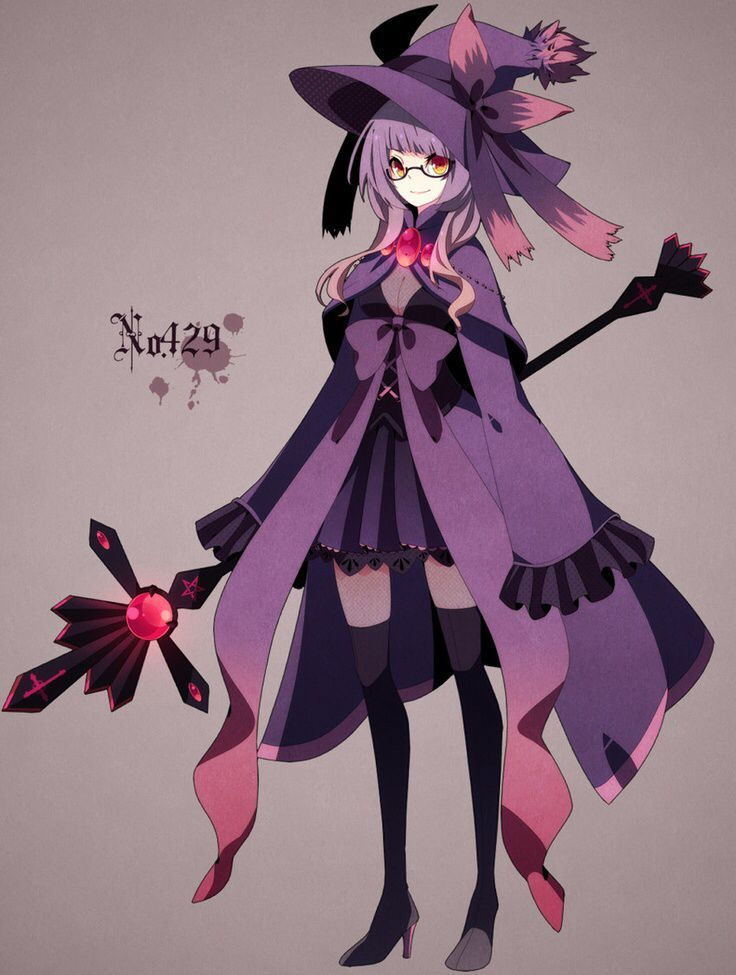

Lilith Gomez
Personality: Lilith is brooding, grim, and moody. She is so quiet in fact that she is often in rooms and no one realizes. Lillith may be considered creepy by some people as she is always reading and is often quietly “appearing” behind her friends. She has a extreme case of insomnia and has a tendency to faint suddenly due to sleep deprivation. Although she can be very docile when it comes to her friends, in fights, it is a completely different story, as due to her ghost specialization, she can leave some villains ending up severely traumatized or nearly dead should they anger her.
Age: 17
Gender: Female
Eye Color: Yellow
Hair Color: Black with dark purple streaks
Skin Color: Tan
Hometown: Ecruteak City
Home Region: Johto
Trivia:
Lilith doesn’t have a favorite food, but she does love to drink black coffee. Apparently, caffeine has the opposite it is supposed to for her and makes her tired.
Lilith is often seen reading gothic poetry and writings when she’s not sleeping.
Lilith frequently uses words to describe her actions, such as saying the word "Sigh" instead of actually sighing.
Lilith is the least capable hand-to-hand fighter in her group, but this is only because her special attack moves make up for it.
Many pranks have been pulled by Lilith’s Mismagius and Gengar but Lilith never partakes in them. However, this does not mean that she doesn't know about them beforehand.
Pokémon:

Mismagius♀
“Salem”
Ghost
Ability: Levitate
Salem has the ability to float through the air. She is also unaffected by Ground-type attacks while floating.
Personality: Salem is a Pokémon with a very relaxed manner who does things at her own pace. Furthermore, she is also a very caring Pokémon, as she offers her help to assist Lillith in finding a way to control her magic. However, she also likes to seduce her fellow squadmates, like her constant flirtation with Ivo’s Golisopod and Jon’s Lucario.
MOVES:
Shadow Ball (Ghost)
A purple-black ball of energy forms in front of Salem's mouth. She then fires the ball at the opponent.
Thunderbolt (Electric)
Salem's eyes glow yellow. Then, she releases a powerful bolt of yellow electricity from her body at the opponent.
Energy Ball (Grass)
Salem opens her mouth and a green energy ball appears in front of it. She then fires the ball at the opponent. When it hits the opponent, it explodes on impact.
Dazzling Gleam (Fairy)
Salem releases a bright white light from her body. She then jumps in the air and rainbow-colored rays of light come from the white light. The rainbow-colored rays then shoot out and hit the opponent.

BURST
As a user of Burst, Lilith can use many of the abilities of the Pokémon she combines with Salem, her Mismagius. Combining with Salem gives Lillith the ability to float, phase through solid matter, turn invisible, and use ghostly energy to attack enemies.
TECHNIQUES:
Lilith turns invisible, disappearing and reappearing to disorient a foe, and with a final scare, Lilith attacks the foe by hitting the foe with a Shadow Ball.
Lilith creates a Shadow Ball, then infuses the ball with electricity from Thunderbolt, nature energy from Energy Ball, and light energy from Dazzling Gleam. She then fires it at an opponent.
Lilith uses her intangibility powers to grab an enemy and drag them underneath the floor, trapping them until either she chooses to let them out or they are powerful enough to break free.